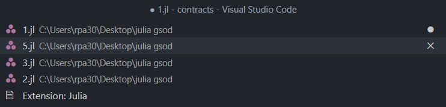
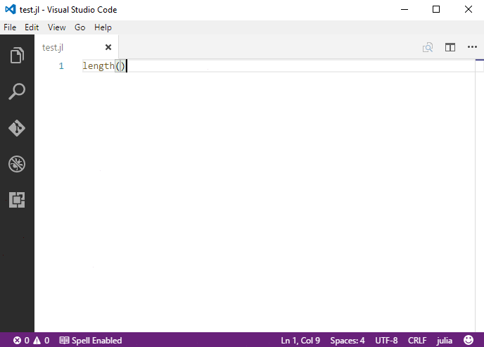

代码导航
快速文件导航
提示：按住
Ctrl+P(快速打开) 以按名称打开任何文件。
有两个命令可以让用户轻松使用快捷键在文件内外进行导航。
- 按住
Ctrl并按Tab可以查看在编辑器中打开的所有文件列表。 - 要打开其中一个文件，再次按
Tab选择你想导航到的文件，然后释放Ctrl以打开它。

或者，你可以使用 Alt+Left 和 Alt+Right 在文件和编辑位置之间导航。如果你在同一文件的不同行之间跳转，这些快捷键可以让你轻松导航到这些位置。
打开包目录
跳转到定义
你可以按 F12 跳转到符号的定义。
如果你按住 Ctrl 并悬停在某个符号上，声明的预览将会出现：

提示：你可以使用
Ctrl+Click跳转到定义，或者使用Ctrl+Alt+Click在侧边打开定义。
跳转到符号
你可以使用 Ctrl+Shift+O 在文件内导航符号。输入 : 后，符号将按类别分组。按 Up 或 Down 键导航到你想要的位置。

按名称打开符号
你可以使用 Ctrl+T 按符号名称打开特定符号，无论它位于哪个文件中。输入你想导航到的符号名称，然后按 Enter。